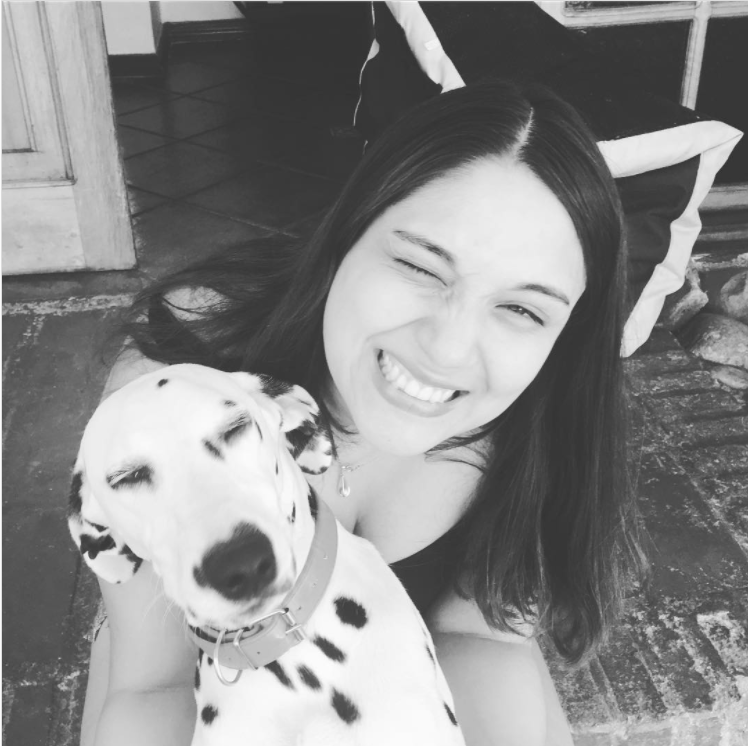

Curriculum

Leia Andrea Aedo Alarcon
Resumen:
Leia es una dalmata que le jugar a la pelota todo el dia. Es experta en
correr y perseguir gatos. Su hobbie favorito es salir a caminar por el
vecindario.
Leia le gusta probar nuevos colores
Datos personales
- Nombre: Leia Andrea Rojas Aedo
- Fecha de Nacimiento: 22/Julio/2019
- Lugar de Nacimiento: Pichilemu
Premios y Reconocimientos:
- Mejor perrita de la Vecindad.
- A la mas veloz del Mundo.
- La mas relagona de Petlandia.
Si quieres conocer más puedes visitar su
instagram
Visita mi portafolio